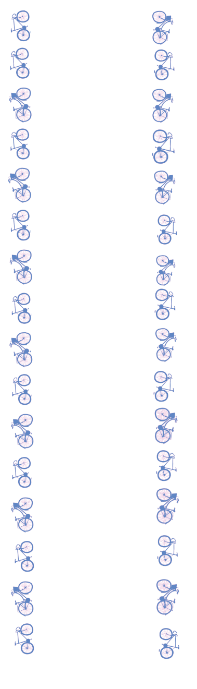

DE WINKEL
Op zoek naar een goede fiets die niet alleen duurzaam is, maar ook perfect past bij het Amsterdamse stadsleven? Bij Recycle Amsterdam vindt u opgeknapte tweedehands fietsen die klaar zijn voor een tweede leven. Neem een kijkje en draag bij aan een duurzamere wereld door te kiezen voor hergebruik en minder verspilling.
Navigatie Opties
Bekijk
DAMESFIETSEN
Navigatie Opties
Bekijk
HERENFIETSEN
Navigatie Opties
Bekijk
STADSFIETSEN
Navigatie Opties
Bekijk
PRODUCTEN